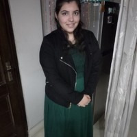

Our Testimonials
-

"I won 't be exaggerating in calling the ACM Online Social Media Workshop a turning point in my life since it motivated me to focus on the field of Machine Learning (ML) and even pursue my Master's degree. Not only did I receive tremendous information on tools for ML and Social Media Platform APIs, like Python, Gephi, Pandas, Numpy, Scipy, Twitter REST API, etc, but was also introduced us to a new set of possibilities that included research as well as industry-based jobs in the field. Personally, the hands-on project in the end and having been introduced to Data Science for Social Good (DSSG) were major because of the amount of learning and the sense of purpose they gave me,thus changing my life."
Rachayita Giri
MS, California State University
-

"I attended the Winter Workshop on Data Science and Machine Learning organised by ACM IGDTUW.This workshop was like a gateway to the world of data science and ML. I was able to understand concepts from scratch, followed by code implementations. The structure of the workshop was perfect to develop interest as well as skill. I have been a consistent ACM member and was eventually given the position of the Membership Chair at IGDTUW ACM Student Chapter. All this has played a role in my selection to attend the 7th Heidelberg Laureate Forum. I currently work at Cisco Systems India as a Security Consulting Engineer, where I get the chance to think analytically and solve problems every day."
Pooja Bharadwaj
Cisco Systems India
7th Heidelberg Laureate Forum Alumini -

"Back in December 2017, I got the opportunity to attend the Data Science and Machine Learning Winter workshop. Besides, Regular assignments, doubt-clearing sessions, we were also exposed to the skills of Technical Paper Writing and the process of Ideation. This was a great platform to network with highly knowledgeable and experienced folks. This workshop helped me kick start my journey in Data Science and Machine Learning and post its completion, I pursued a couple of projects and published my work in one of the IEEE conferences. I have also contributed in organizing BI Fest and few more. A big thanks to Rishabh Sir for all the efforts he puts in. My journey with ACM has been remarkable."
Jaspreet Kaur
Network Engineering Intern, Cisco
MCA, Final yr IGDTUW -

"The insightful 1-week Winter Workshop on Data Science & Machine Learning conducted in Dec 2017 was an amazing workshop.The workshop had commenced with an ice breaking session followed by various enlightening sessions on Data Collection & Pre-processing,Hypothesis Testing & Parameter Estimation,using LATEX for writing technical papers and much more.I got this opportunity to learn from these amazing sessions conducted under the able guidance of Faculty Advisor-Mr. Rishabh Kaushal along with members from Precog Research Group, IIIT-Delhi."
Reeti Sarup
Software Engineer, Intuit
Vice-Chancellor's Gold Medalist
Former Secretary of ACM Student Chapter IGDTUW -

"The Summer Workshop on Online Social Media - Developer's perspective was an amazing experience. We were introduced to the world of rest APIs and learned data collection, analysis and visualisation. We were able to use new technologies and expand our research horizons while building the workshop project. The sessions were hands-on and practical. All the instructors were super helpful and the final presentation was extremely rewarding and enlightening. I was able to write a research paper on my project in this workshop and I presented it at the Student Research Symposium at International Conference on Distributed Computing and Internet Technology in 2017"
Gopika Bhardwaj
Software Engineer at Orange Business Services
-

"I was very fortunate to attend the workshop on “Programming Tools and Techniques for Project Development in Linux Environment” way back in 2011! Rishabh Sir is an excellent teacher with immense focus on making us learn by doing. The workshop was very insightful and made us learn the core concepts through practical problems. These concepts helped me build a strong foundation in the essential skills of Linux and C programming which are relevant even today in the industry. After completing my Bachelors, I worked at Cisco Systems, Bangalore for 4 years and then moved to the US for pursuing my Masters in Computer Science. I’m currently working at Facebook in California, US. "
Priyanka
Facebook
California, US